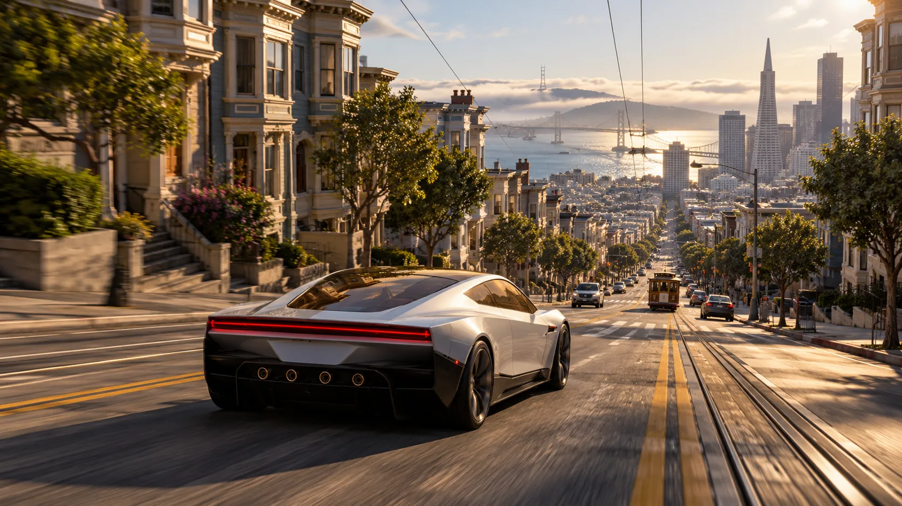
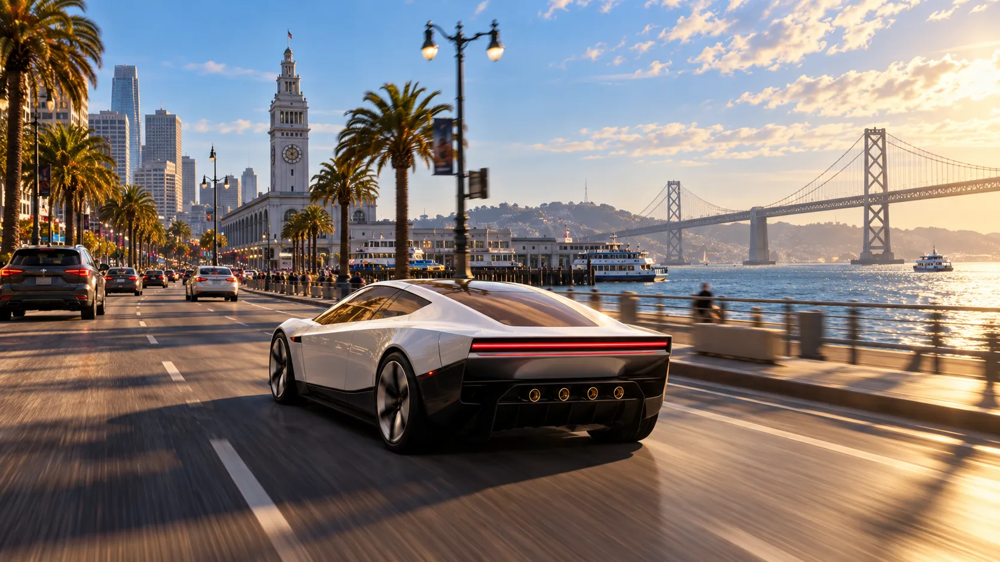
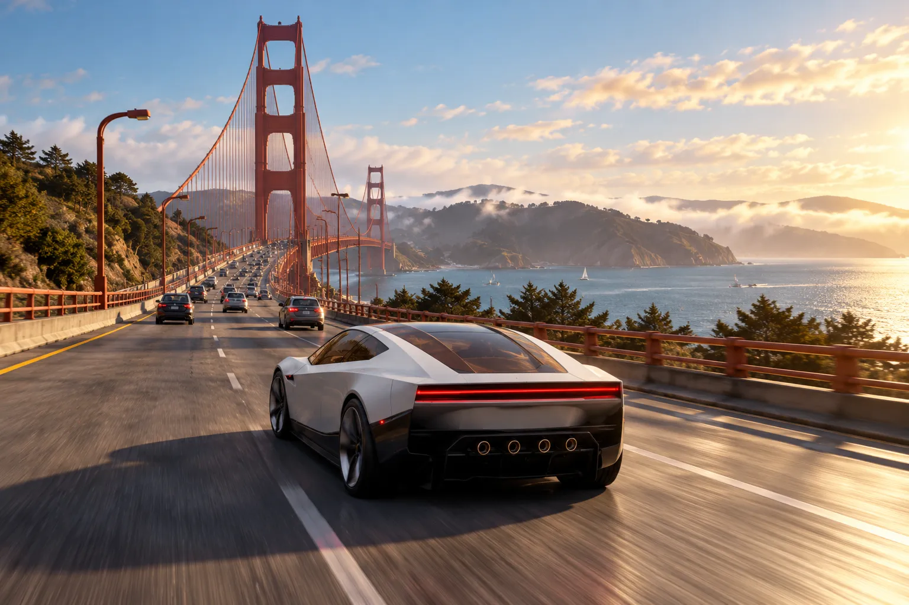

VISUAL LAB / SAN FRANCISCO
A more detailed Bay?
These AI-generated concept illustrations explore a possible direction. They are not gameplay screenshots. The separate playable experiment adds generated facade art to a few San Francisco buildings and a Roadster-inspired model to the existing game world; it is much simpler than these concepts.
Drive the Embarcadero demo ↗ Play the earlier SF experiment ↗


Roadster styling is an artistic interpretation of Tesla's 2026 reveal. Tesland is an independent fictional game and is not affiliated with Tesla.